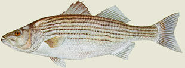

Background
The striped bass, Percicthyidae Morone Saxatilis, also known as rockfish south of New Jersey, can be found all along the Atlantic coast from Florida to Maine. Striped bass are a popular game fish and they are much venerated among surf fishermen. They can grow quite large: the world record striped bass caught on rod and reel is 78 lb 8 oz (35.6 kg). It was landed from jetty in Atlantic City, NJ by Albert McReynolds. He was fishing a Rebel Windcheater during a stormy, fall night in 1982. There have been reports of striped bass netted weighing 125 lb (57 kg). However this was during the ( 1700s ? not sure about the date). There has not been so large a fish recorded in recent history, however these accounts indicate the growth potential the striped bass possesses.
Life Cycle
Striped bass breed in freshwater and spend their adult lives in saltwater. There are three main breeding stocks of striped bass: Chesapeake Bay, Hudson River and Delaware River. There are many smaller breeding areas that contribute to the overall striped bass population. It is believed that many of the rivers and tributaries that emptied into the Atlantic, had at one time, breeding stock of striped bass.
This excellent fish is found all along the Atlantic coast, from Florida to Maine. It inhabits the rivers, bays, inlets and creeks; and is taken in great abundance, particularly in the Chesapeake Bay and its tributaries. There, it frequently grows to the length of three, four and even five feet and weighing in some instances, full one hundred pounds! The striped bass will run up some rivers a hundred miles or more, and in Maine they are found quite plentiful in the Penobscot. In the Connecticut, too, some very fine ones are taken. In winter they still keep their haunts, and do not go into deep water like other fish of similar habits.
In the spring of the year the striped bass runs up the rivers and into other fresh water places to spawn - and then again late in the fall to shelter. The fall run is the best. Trolling for Stripers is excellent sport, and is practiced a good deal by amateurs.
|
|